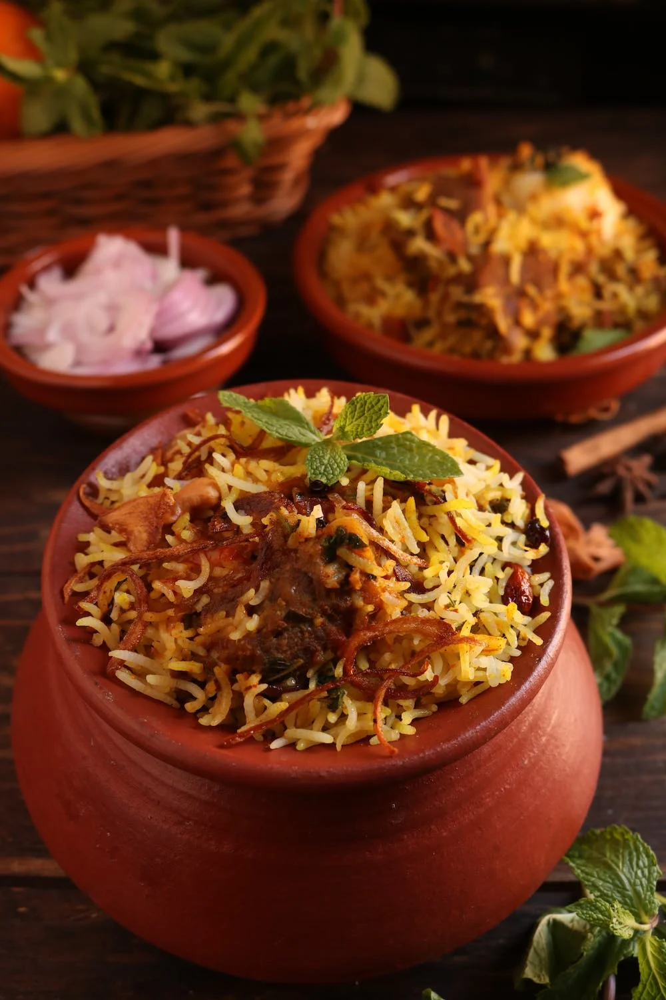

Chicken Biryani

Yummy and mouthwatering rice cooked in spices with chicken or meat of your choice.
One can always skip the meat and replace it with veggies
Ingredients
- 1 kg chicken
- 3 cups rice
- 2 chopped tomatoes
- 1 chopped onion
- few chopped green chillies
- 1 cup yogurt
- handful of chopped mint and coriander leaves
- red chilli powder according to your spice level 1-2 spoons
- salt to taste
- 2 tbsp ginger garlic paste
- cardamom pods
- 1 cup cooking oil
- Garnish: boiled eggs, fried potatoes and mint leaves (optional)
Steps
- Wash thoroughly chicken pieces and pat dry
- Marinade chicken pieces into yogurt and other ingredients except rice and cardamom pods
- Boil rice till one third with cardamom pod and a spoonful of salt
- strain the rice and keep aside
- Now in a big vessel add marinated chicken and put half done rice over it
- Tightly close the lid of the vessel, so that steam doesn't came out
- Cook on high flame for 5-7 minutes than lower the flame and cook biryani for almost 45 minutes
- Check in between if rice and chicken pieces are done
- cook till chicken pieces are tender
- Garnish with eggs, fries and mint leaves
Serve hot with yogurt or chutney.
Enjoy !!